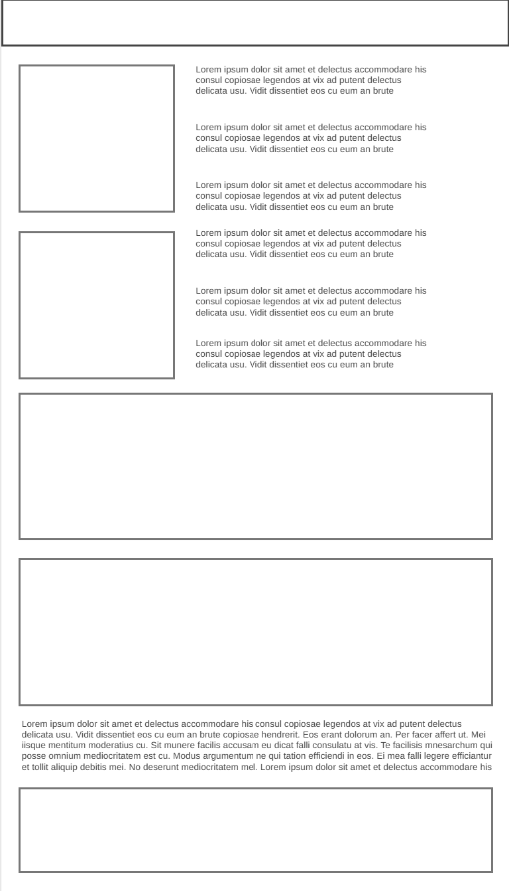
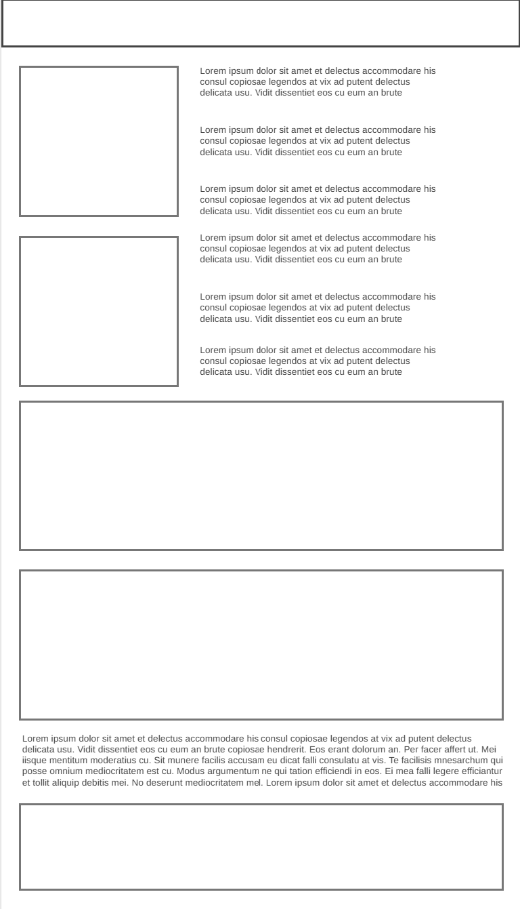

Overview
Purpose
We strive to provide the best experience in white water rafting

Audience
Ages 13 - 60 white water rafting.
Branding
Website Logo
Style Guide
Color Palette
| Primary | Secondary | Accent 1 | Accent 2 |
|---|---|---|---|
Typography
Heading Font: IM Fell French Canon
Paragraph Font: Lato, Helvetica, sans-serif
Why white water rafting?
White water rafting is fun for everyone and fun for the family.
Our rafts
Our rafts are very durable, in fact our durability is so good, no natural rock can even pierce it!
Navigation with Hover
Site Map
Home
[Page2]
Contact Us
Wireframes
Home
 
